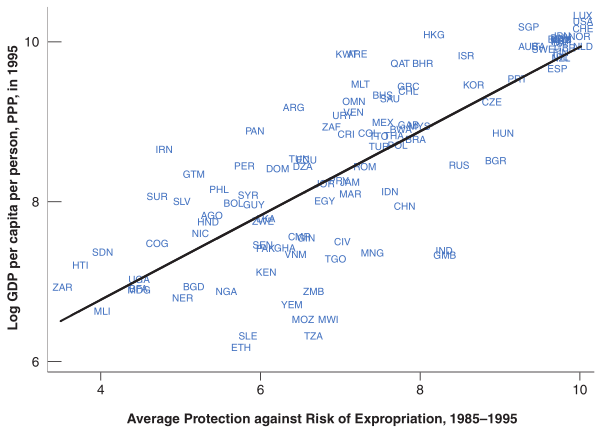

The Solow Model of Economic Growth#
The Solow-Swan model–often referred to simply as the Solow model–is a foundational framework in macroeconomics for understanding the sources of long-run economic growth. Developed independently by Robert Solow (1956) and Trevor Swan (1956), this model provides a theoretical explanation for how the accumulation of physical capital, labor force growth, and technological progress determine a country’s economic trajectory.
At its core, the Solow model emphasizes three forces shaping the path of an economy:
Capital accumulation (the buildup of physical tools, equipment, and infrastructure),
Labor force growth (an expanding workforce),
Technological progress (improvements in knowledge and efficiency)
Compared to the simple production function model developed in the last chapter, the Solow model endogenizes the capital stock. That is, we will have a theory about how capital accumulates over time which in turn drives economic growth. With this tool in hand, we then investigate to what extent the accumulation of capital can, by itself, deliver sustained economic growth.
Economic growth is not uniform across countries. Over the past half century, some economies have experienced rapid, sustained increases in living standards, while others have stagnated. This disparity is not simply a matter of different starting points; it highlights the critical importance of understanding the mechanisms that drive prosperity.
Consider the cases of Botswana and Gabon as an example. Both countries were rich in natural resources and had similar levels of GDP per capita in the early 1960s. However, their economic paths diverged dramatically. Botswana leveraged its diamond wealth into a highly successful, stable economy. From 1965 to 2017, its GDP per capita grew at an astonishing average rate of 6.2% per year. Gabon, despite having vast oil reserves, saw its growth stall. Over the same period, its GDP per capita grew at a much lower average rate of 1.4% per year.
This stark contrast prompts the question: What factors account for such differences in long-term economic prosperity? While a complete answer involves complex issues like governance, institutions, and policy, the Solow model provides a crucial first step by focusing on the fundamental role of capital accumulation.
The Solow model provides an abstract representation of an economy’s ability to produce goods and services. A useful way to conceptualize this process is through the following metaphor. Imagine a large family farm that grows only one crop: corn. The capital stock of this economy is represented by the farm’s silo, which contains bags of corn seeds. The production process involves the farmers (the labor force) planting some of these kernels in the spring. Over the summer, the seeds grow, and in the autumn, a harvest is collected. This harvest represents the total economic output, or Gross Domestic Product (GDP). A portion of this harvest is consumed by the family to live, while the remaining portion is saved and invested—-that is, it’s put back into the silo as new seeds for the next season. The size of the harvest grows year after year because the family is continuously adding more seeds to the silo. This process of re-investing a portion of the output back into production is the essence of capital accumulation in the Solow model.
The Solow model explores whether this process of capital accumulation alone can lead to ever-increasing prosperity, or if there are inherent limitations that cause the economy’s growth to slow down over time.
Building the Solow model#
The Solow model rests on a small set of relationships that capture how an economy produces, allocates, and accumulates resources over time. These relationships can be grouped into four components:
A production function that describes how capital and labor combine to generate output.
A resource constraint that allocates output between consumption and investment.
A capital accumulation equation that links current investment to future capacity.
A savings rule that determines how much of output is set aside for investment.
Taken together, these equations describe the entire trajectory of the economy. Let’s develop them step by step.
The Production Function#
The economy produces final output using capital and labor according to a production function. Here we continue to use the Cobb-Douglas form:
As before, \(Y_t\) is the total output (GDP) in period t. The inputs are capital (\(K_t\)) and labor (\(L_t\)). The term \(A\) represents the level of technology or total factor productivity, and the exponent \(α \in (0,1)\) represents capital’s share of income. From this production function, we can see three potential drivers of economic growth: an increase in the size of the workforce (\(L\)), an increase in the capital stock (\(K_t\)) or an improvement in technology (\(A\)). However, since the relevant measure for citizens’ economic wellbeing is output per capita, increasing the size of the workforce will not deliver meaningful growth. We are left with either accumulation of capital or technological advancement as our hope for growing prosperity.
The Resource Constraint#
In our economy, output can only be used for one of two purposes: consumption (\(C_t\)) or investment (\(I_t\)). This accounting identity is captured by the resource constraint equation:
Recall that consumption represents the goods and services that are used by households to satisfy their wants and needs, while investment represents the portion of output that is set aside to build new capital, such as machinery, buildings, and infrastructure.
Capital Accumulation#
The amount of output invested today determines the amount of capital the economy has available to it tomorrow. Specifically, the capital stock in the next period is equal to the capital from the current period, plus new investment, minus the capital that wears out or becomes obsolete (depreciation).
where \(\delta\) is the depreciation rate, a parameter that represents the fraction of the capital stock that depreciates each period. This is called the capital accumulation equation: it determines how much capital the economy has given investment and depreciation. We can also express this equation in terms of the change in the capital stock:
which shows the change in the capital stock is the difference between investment and depreciation.
Modeling Savings and Investment#
The Solow model simplifies the decision of how to allocate output by assuming that each period the economy consumes a constant fraction of output and invests the remainder. This behavior is represented by the equations
where \(\bar{s}\) is the savings rate. Although unrealistic, the behavioral assumption allows the model to remain very simple while still delivering insight. More complicated models, such as Real Business Cycle (RBC) models, allow households to choose how much to consume and save; but this level of complexity is outside our current scope of analysis. Additionally, let’s assume that the technology of the economy and workforce are constant over time:
We will relax these assumptions later, introducing population growth and technological progress.
The Solow Model and its Steady State#
Combining these building blocks yields a system of four equations in four unknowns:
Endogenous variables: \(\{Y_t,K_t,I_t,C_t\}\)
Exogenous variables: \(\{\bar{L},\bar{A}, \bar{K}_0 \}\)
Parameters: \(\{s,\delta,\alpha\}\)
Notice that our equilibrium is dynamic: it shows the entire path of the economy from time \(t=0\) to \(t=1,2,3,...\). The trajectory of output \(Y_t\) depends on the trajectory of capital \(K_t\), which in turn depends on investment , which itself is a function of output \(Y_t\). To understand the model’s dynamics, it’s helpful to visualize the relationships using a Solow diagram. Combining the capital accumulation equation with the investment equation obtains
which shows that the change in capital is equal to net investment: investment less depreciation. If investment is greater than depreciation, then the capital stock grows. If depreciation is greater than investment, then the capital stock shrinks

There exists a level of capital such that it will neither grow or shrink over time. This is called the steady-state capital stock and it is a crucial concept in the Solow model. The steady state is a long-run equilibrium where the capital stock no longer changes (\(\Delta K_{t+1}=0\)). At this point, new investment is exactly equal to the amount of capital that depreciates each period.
Substituting out the production function into this condition we can write
which is solved for the steady state level of capital
Once we know the trajectory of capital \(\{K_t\}_{t=0}^{\infty}\) we know the path for output \(\{Y_t\}_{t=0}^{\infty}\) from our production function
For example, once the economy reaches \(K^{*}\) output will also stop growing and will settle at its steady-state level \(Y^{*}\).
We can represent the trajectory of output in our Solow diagram by simply plotting the production function with respect to capital. Thus, the Solow model predicts that the economy converges to a long-run equilibrium where capital and output are constant over time.

Since we already computed steady state capital \(K^*\), it’s easy to compute steady state output!
According to our model higher savings rates generates higher steady state capital-to-output: \(\frac{K^*}{L^*}=\frac{\bar{s}}{\bar{\delta}}\)

The model predicts that an economy will naturally move towards its steady state. This phenomenon is called transition dynamics. If an economy starts with a capital stock below its steady state (\(K_t < K^{*}\)), investment will be greater than depreciation. This will cause the capital stock to grow, and as a result, output will also grow. The growth rate will be highest when the economy is farthest from its steady state and will slow down as it approaches the steady state. Conversely, if an economy starts with a capital stock above its steady state (\(K_t > K^{*}\)), depreciation will exceed investment, causing the capital stock to shrink back towards \(K^{*}\).
This powerful insight suggests that poorer countries, with relatively low capital stocks, should grow faster than richer countries, as they have more potential to accumulate capital and “catch up” to their steady states.
Most countries, rich and poor, grow at the same rate suggests that most countries have already reached their steady states.
Evaluating the Solow Model#
When discussing economic growth, we often care about GDP per capita to more closely measure the standard of living. In our model this is simply
and the steady state level of consumption per capita is simply
The basic Solow model provides a framework for understanding economic growth, but its conclusions also highlight its limitations. The model predicts that in the absence of technological progress, an economy will eventually reach a steady state where GDP per capita is constant. This implies that capital accumulation alone cannot generate sustained long-run growth. While a higher savings rate (\(\bar{s}\)) or a more efficient production process (\(A\)) can lead to a higher steady-state level of output per capita (\(y^{*}\)), it does not change the fact that growth eventually ceases.
Returning to our earlier case study, differences between Botswana and Gabon can be interpreted through the lens of the Solow model. Differences in steady state incomes are driven by differences in savings rates, depreciation, and technology. We can measures these differences by simply taking the ratio of each countries steady state output which decomposes GDP per capita differences into three parts.
With data on GDP per capita, savings rates, and depreciation rates we can measure the contribution of each component to differences in long-run GDP per capita.

Solow predicts that economic growth happens as the economy transitions to it’s steady state. Once it reaches its steady state level, however, GDP per capita is constant at \(y^*\) and consumption is constant at \(c^*\). Somewhat unsatisfying (but insightful!) conclusion: capital accumulation cannot be a source of sustained long-run growth. This is the most critical limitation of the basic Solow model. To address this shortcoming in the next chapter we introduce technological progress and population growth. These additions will transform the model from one of temporary growth to a steady state into a model of sustained growth driven by forces beyond simple capital accumulation.
Introducing Technological Progress#
Up to now, the Solow model has demonstrated how capital accumulation shapes growth, but with an important limitation: once the economy reaches its steady state, growth stops. In reality, however, modern economies continue to grow in output per person. One of the key forces driving such growth are technological developments.
Technological advancement take many forms: new products, better quality, faster communication, more efficient production methods, or entirely new industries. For our purposes, we won’t model how these innovations arise. Instead, we treat technological progress as exogenous-—something that improves automatically over time-—and study its consequences for growth. We will not model (for now) the process by which new technology is created. Instead, we will take the evolution of technology over time as exogenous and see how it affects economic growth.
Formally, let the evolution of technology and labor over time be
where \(g\) and \(n\) are the constant growth rates of technology and labor. We also assume that technology is labor-augmenting, meaning that it affects the productivity of labor but not capital. Out is therefore produces according to,
Notice that the combination \(A_t L_t\) enters like “labor measured in efficiency units.” We call this effective labor. Why do this? If both technology and labor grow without bound, then output \(Y_t\) will also grow without bound. To study long-run equilibrium, we need to normalize by the growing factors. Expressing variables per unit of effective labor allows us to look for a steady state in which output per effective worker is constant, even while raw output and population are growing.
Also, notice that with a Cobb-Douglas function it really doesn’t matter if technology is labor-augmenting, capital-augmenting, or neutral
but it does matter for other production functions. For simplicity let’s just write our equations such that productivity is labor augmenting. We will refer to \(A_t L_t\) as the units of effective labor and write our model in terms of variables per effective labor. For example, our production function looks like this
where \(k_t=K_t/A_t L_t\) is capital per effective labor. To track how capital per effective worker evolves over time, we simply divide \eqlaw_motion_capital by $A_{t+1}L_{t+1} to convert the equation into units of effective labor.
notice that the first term doesn’t have a clear interpretation because the time periods are not consistent. We can make it consistent by substituting out \(A_{t+1} = (1+g)A_{t}\) and \(L_{t+1}=(1+n)L_t\).
where I’ve made use of the fact that \(g \times n \approx 0\). Here is our Solow model where are variables are expressed per unit of effect labor:
Endogenous variables: \(\{y_t,k_t,i_t,c_t\}\)
Exogenous variables: \(\{\bar{L}_0,\bar{A}_0, \bar{K}_0 \}\)
Parameters: \(\{s,\delta\,\alpha,n,g\}\)
Let’s work with the law of motion for capital to understand population and technology growth affects the dynamics of our economy:
The interpretation of this dynamic equation is straightforward: the capital stock grows if actual investment \(i_t\) exceeds break-even investment \((n+g+\delta)k_t\)–the amount of investment that must be done just to keep \(k\) at it’s existing level. The reason there exists break-even investment is that investment in new capital needs to cover depreciation (\(\delta\)), labor force growth (\(n\)), and technological progress (\(g\)). At the steady state, investment exactly equals break-even investment, leaving \(k_t\) constant over time.
Policy Experiments in the Solow Model#
With the model in hand, we can perform some experiments to predict how our economy responds to changes in its parameters. A classic example is a change in the savings rate. Specifically, suppose that households increase the fraction of income they save, raising the savings rate \(\bar{s}\).
A higher savings rate increases investment, since \(i_t = \bar{s}y_t\). At the previous level of capital per effective worker \(k^*\), investment now exceeds the break-even investment needed to cover depreciation, population growth, and technological progress. As a result, capital per effective worker begins to grow. Output rises alongside the capital stock until the economy reaches its new steady state with more capital per effective worker and higher output.
From a positive (descriptive) standpoint, more saving leads to more capital and output. But economics also cares about normative questions: is the outcome desirable? To address this, we appeal to the concept of welfare–the aggregate utility of all agents in the economy.
Recall that a utility function tells us whether agents prefer one outcome to another, and usually we pay the most attention to consumption. We always assume \(U'(C)>0\) so that more consumption generates higher welfare, and we usually assume \(U''(C)<0\) so that the extra satisfaction from more consumption diminishes. Since utility is ultimately tied to consumption, welfare maximization in the Solow model boils down to the question: what savings rate maximizes steady-state consumption?
Recall that steady state consumption is simply a constant fraction \(1-\bar{s}\) of steady state output
The tradeoff from saving is obvious: higher \(\bar{s}\) reduces the fraction of output consumed but increases to the total output available. Mathematically, we can compute the optimal savings rate by simply solving
Using the steady state condition \(\bar{s}y^* = (n+g+\delta)k^*\) and the production function \(y^*=(k^*)^{\alpha}\), we can write
The first-order condition to this problem is
We have that the capital which maximizes consumption, which we call the golden rule level of capital, is given by
Which savings rate generates this optimal level of capital? Recall that steady state capital is given by
so clearly \(s_{GR}=\alpha\) is the golden rule savings rate! The golden rule savings rate \(s_{GR}=\alpha\) gives the highest consumption in steady state
Let’s reconsider our experiment when the economy increases its savings rate \(\uparrow \bar{s}\):
Capital rises
Output rises
Consumption…
…rises if \(\bar{s}<s_{GR}\)
…falls if \(\bar{s}>s_{GR}\)
What about GDP per capita \((Y/L)\)? We have
so therefore
at steady state \(y_t=y^*\) GDP per capita grows at rate \(g\). So the only source of sustained long-run economic growth is growth in productivity.
What variables are really being measured by \(A_t\)? The answer is, anything that affects the output on an economy holding inputs constant:
technology and human capital
institutions: laws, regulations, government policies
misallocation: government policies or market environments that inhibit resources to go where they are most productive (e.g. SOEs versus POEs)
market frictions: inherent difficulties in matching buyers/sellers
capacity utilization: not all resources are being fully utilized at all points in time

Growth Accounting#
The Solow model identifies two possible sources of variation in output per worker: differences in capital per worker \((K/L)\) and in technology \((A)\). To empirically assess their relative importance, economists use an approach called growth accounting. Consider the production function
and re-write it in growth rates
where \(\gamma_x = \ln x_{t+1}-\ln x_t\). Since GDP, capital, and labor are observable in the data, and income shares can be measured, we can decompose GDP growth into the contributions of capital and labor. The remainder, \(\gamma_A\), captures productivity growth. Because it measures everything we cannot directly observe—-innovation, efficiency gains, institutions, and more—-it is sometimes called a measure of our ignorance.
Kaldor Growth Facts#
How do the predictions of the Solow model compare to patterns observed in the real world? In 1963, the British economist Nicholas Kaldor made a list of six stylized facts about growth in a single (industrialized) country:
Output per capita grows over time, and its growth rate does not tend to diminish.
Physical capital per worker grows over time.
The rate of return to capital is nearly constant.
The ratio of physical capital to output is nearly constant.
The shares of labour and physical capital in national income are nearly constant.
The growth rate of output per worker differs substantially across countries.
Let’s see how well the Solow model lines up with each fact.
Fact #1: Per capita output grows over time, and its growth rate does not tend to diminish
In the steady state, output per capita \(\frac{Y}{L}\) grows at rate \(g\). Thus, the model predicts sustained growth in living standards—consistent with Kaldor’s observation. (Note that the model does not distinguish between per capita and per worker.)
Fact #2: Physical capital per worker grows over time
Similarly, in the steady state, capital per worker \(\frac{K}{L}\) grows at rate \(g\). This mirrors the data: both output per worker and capital per worker tend to rise together over time.
Fact #3: The rate of return to capital is nearly constant
We haven’t talked about the rate of return to capital, so let’s briefly discuss it now. If we assume perfect competition, then the rates of returns to factors of production should be equal to their marginal products. For capital this means \( r = MPK = \frac{\partial F(K,AL)}{\partial K}\). For the case of the Cobb-Douglas production function this is \(r= \alpha \frac{Y}{K}\). On the equilibrium trajectory of the Solow economy the rate of return to capital \(r\) will be constant because \(Y\) and \(K\) both grow at rate \(n+g\).
Fact #4: The ratio of physical capital to output is nearly constant
Again, because \(Y\) and \(K\) both grow at rate \(n+g\), the ratio \(K/Y\) is constant in the Solow model. Another success.
Fact #5: The shares of labour and physical capital in national income are nearly constant
The shares of income going to capital and labor are given by:
With Cobb–Douglas, these shares are fixed parameters, consistent with the empirical observation that labor and capital shares have been remarkably stable over time.
Fact #6: The growth rate of output per worker differs substantially across countries
Here the model is less successful. Solow identified two sources of economic growth: capital accumulation and technological progress. This naturally leads us to two possibilities regarding how the model predictions may deviate from the data. It may be that different countries have different (possibly country-specific) technological growth rates or, even if they share the same technological growth rate, different observed growth rates could arise if countries are at different distances from their steady state. Since the model does not explain why technological progress occurs (it as exogenous), it is not clear whether the growth rate could be different across countries.
Data from 1985–2014 shows that growth rates of output per worker were fairly similar across rich countries, and most of the growth came from technological progress rather than capital accumulation:
Country |
Output per worker (%) |
Technological progress (%) |
|---|---|---|
France |
1.3 |
1.4 |
Japan |
1.6 |
1.7 |
United Kingdom |
1.9 |
1.4 |
United States |
1.7 |
1.4 |
Average |
1.6 |
1.5 |
China provides an illuminating contrast. Over the period 1978–1995, China was on a balanced growth path as the rate of technological progress was close to the rate of growth of output per worker. Since 1996, although growth of output per worker has remained high, the contribution of technological progress has decreased. - Technological progress comes from productivity growth due to labor transferring from the countryside to cities, and imported technology from more technologically advanced countries
Period |
Output (%) |
Output per worker (%) |
Technological progress (%) |
|---|---|---|---|
1978–1995 |
10.1 |
7.4 |
7.9 |
1996–2011 |
9.8 |
8.8 |
5.9 |
China’s case highlights both the usefulness and the limits of Solow: it helps organize growth into capital, labor, and productivity, but does not explain why productivity growth slowed after the mid-1990s.
Numerical Simulation of the Solow Model#
To see how to simulate the Solow model using Python, please refer to the Solow simulation tutorial.